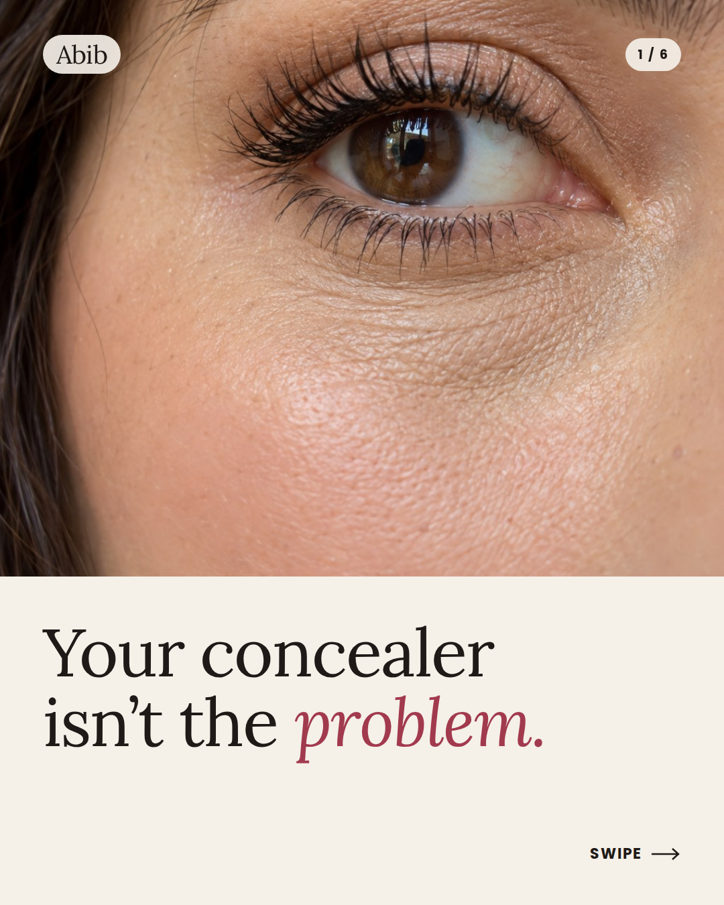

Creator openings look alike
About a hundred videos opened with a line like “My little PDRN routine” over a similar patch close-up.
Abib / Spec Meta carousel / 2026
A spec Meta carousel for Abib’s PDRN Retinal Eye Patch that reaches makeup wearers the brand’s current ads miss.
Creative strategy & design by Archilles Vivero

01 / Project at a glance
Deliverables outlined in the case study: a six-slide 4:5 carousel, an animated version with six six-second cards, and a swipe preview video.
This page includes the static carousel walkthrough and the supplied animated clip.
02 / The audit
I reviewed about 170 active Abib ads in the Meta Ad Library (US, September 2026), scoring them across five layers. The overall ad mix was strong; the opening was the weak spot.
Checks the mix of ad types. Creator videos, statics, before/afters, a carousel and a dermatologist video were represented.
Checks who is speaking. The brand, many creators and one dermatologist were present.
Checks the selling angles: pain, social proof, scarcity, filler alternative and habits.
Checks buyer stages reached. All five awareness stages appeared somewhere in the ad set.
Most creator ads opened in the same soft way, while every brand-page ad in the review opened on a discount.
About a hundred videos opened with a line like “My little PDRN routine” over a similar patch close-up.
The reviewed brand-page ads led with 60% off, buy-one-get-one or a Prime deal.
03 / The insight
“Your concealer isn’t the problem.”
Makeup wearers whose concealer creases by noon blame the concealer, not their skin. In my audit, no Abib ad spoke directly to that frustration.
The concept reframes the issue around under-eye skin preparation. These buyers keep trying concealers and primers without identifying themselves as eye-patch customers. A discount on a patch starts too late in their decision process.
Five awareness stages / closer to buying →
The reviewed creator content spans earlier stages; the brand-page discount openings sit at the most-aware end. This concept introduces a problem-first opening from the brand itself.
The patch is framed as the step that helps makeup work, rather than another skincare product. The skin-cause and product-benefit framing is part of the spec concept, to substantiate before real campaign use.
Each swipe answers the question raised by the previous slide: problem, cause, fix, proof, then offer. Continued swiping expresses interest in the story.
The discount arrives after the viewer cares. It becomes the reason to buy now, rather than the reason to look.
The story and proposed proof points belong to the patch. Introducing two products would ask the viewer to stop and choose.
04 / The creative
Explore each slide and the job it does. Use the arrows, slide buttons, or left/right keyboard arrows inside the preview.
Primary text: “You’ve blamed your concealer, your primer and your setting spray. It was never the makeup.”
Headline: Prep, then conceal
Button: Shop Now
Soft ivory and blush, with a rose accent on a key headline word. A slide counter and swipe cue encourage progression. Animated cards would show their headline from the first frame, so each still works paused.
04 / The animated version
Watch the supplied animated creative alongside the static slide walkthrough.
The animated clip could not load. The static slide walkthrough remains available above.
05 / How I would test it
This is spec work, with no results yet. Select a proposed opening below to explore the test; no winner has been selected.
Slide 1 / Proposed variant
Only the opening changes. Slides 2–6 stay the same.
The success criterion: lower cost per purchase than Abib’s discount-led ads, reaching people who were not already buying eye patches.
06 / What I would improve next
With a real budget and brand access, shoot a real person’s before/after at noon, with the same light and angle and no retouching. Use Abib’s actual product shot on slide six.
Brief an existing Abib creator to film the same story as a native-looking post: “My concealer wasn’t the problem.” Test it against the polished carousel.
Explore other groups the current ads miss, such as new parents who are short on sleep.